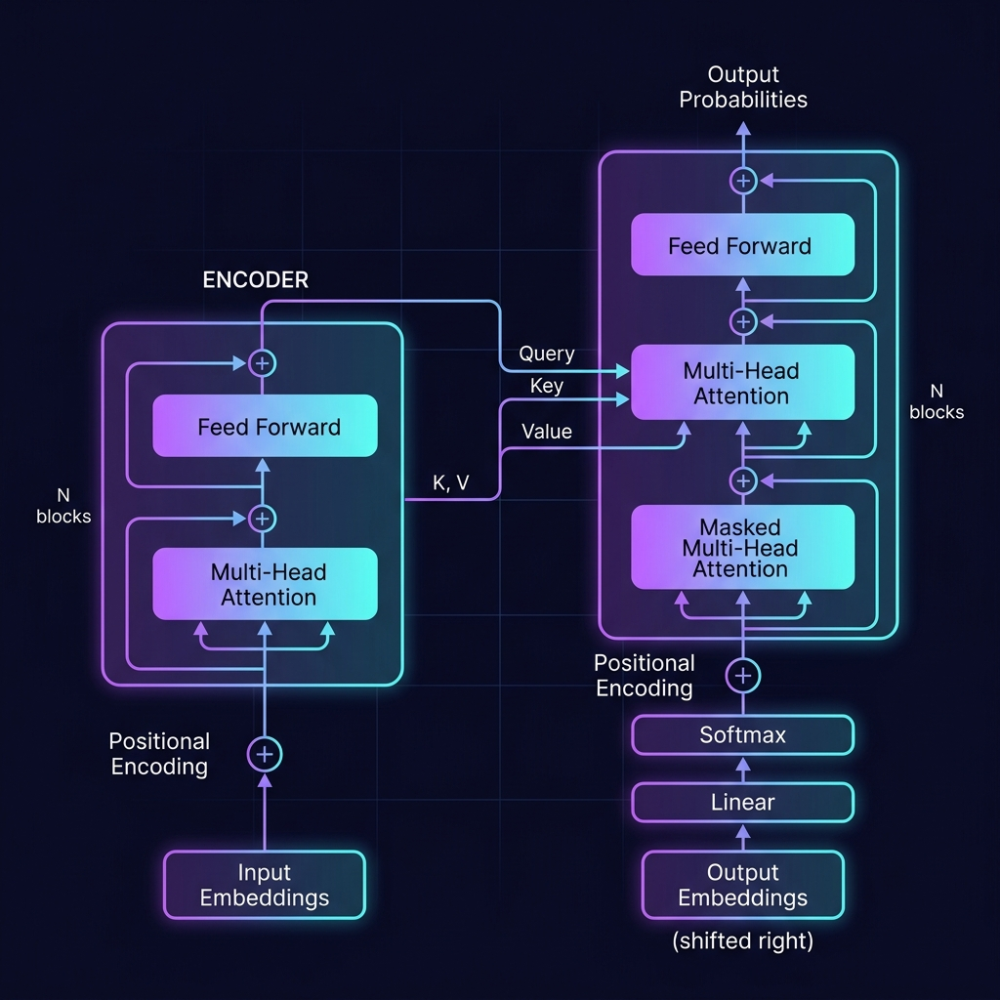
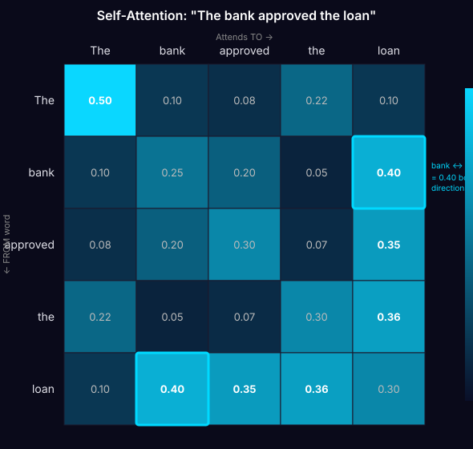
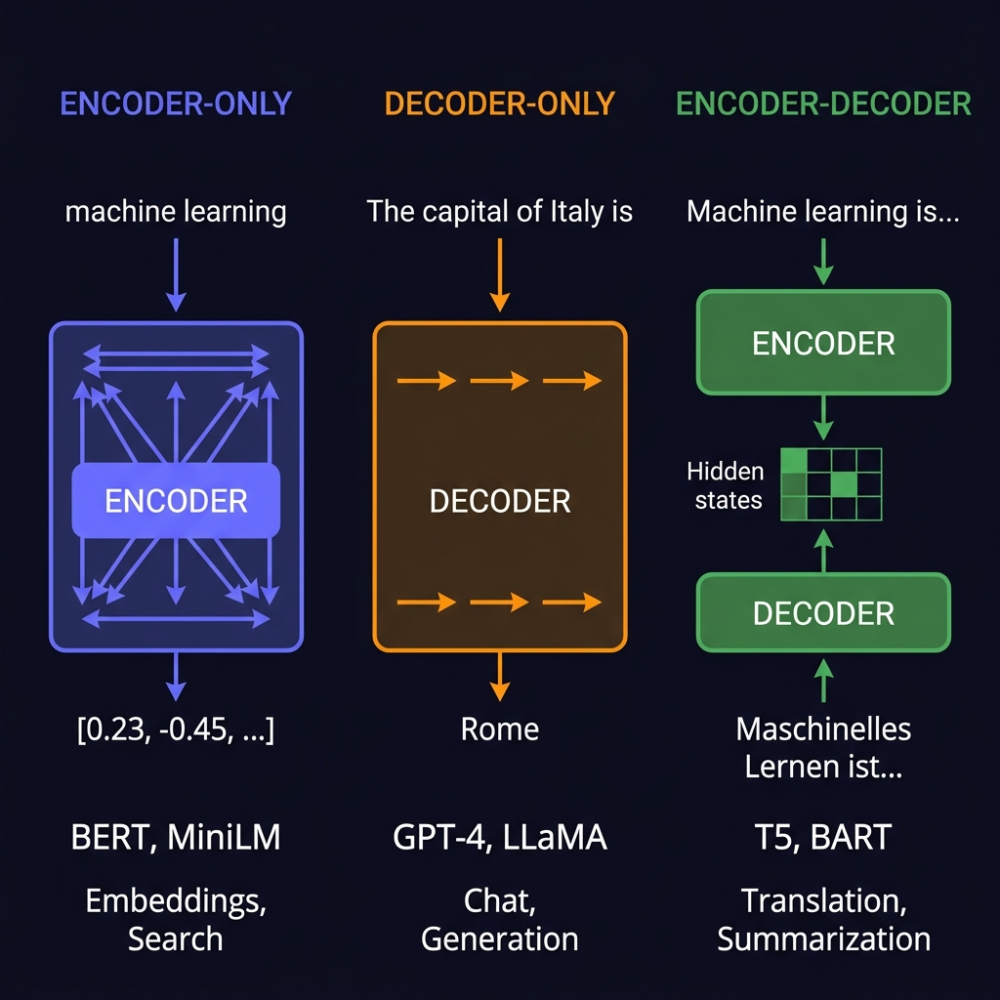
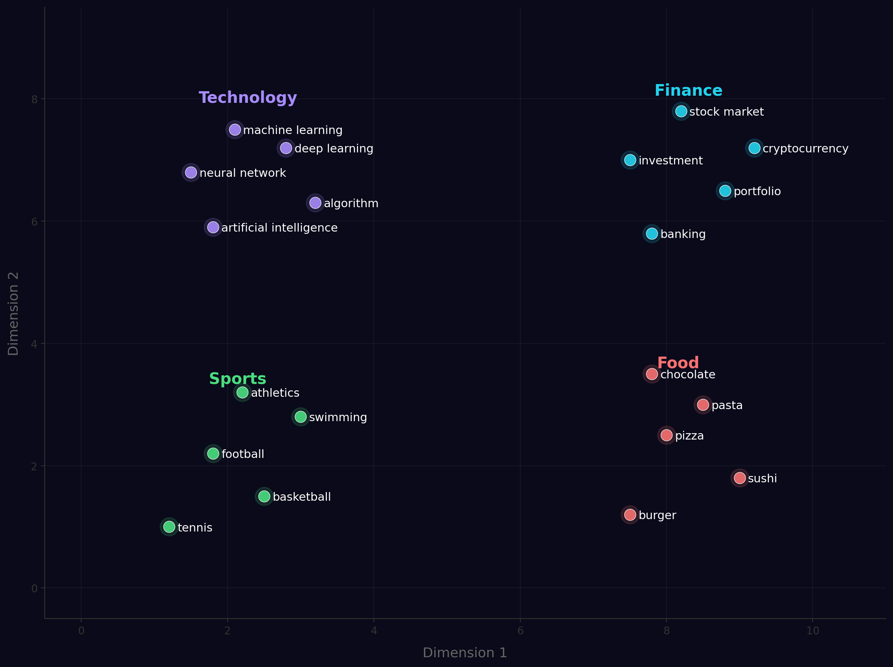

Zucchetti LLM Course — Lecture 1 of 10
How Large Language Models work under the hood
Kamyar Zeinalipour · 2 hours
Section 1 of 4
The architecture that changed everything
Think of it as the world's most sophisticated autocomplete
Your phone keyboard:
"See you" → tomorrow | later | soon
An LLM (same idea, but trained on the entire internet):
"Explain quantum computing" → generates a full, coherent answer
Each paper built on the previous one. Understanding this lineage helps you understand why current models work.
| Year | Paper | Key Innovation | Citations |
|---|---|---|---|
| 2013 | Word2Vec (Mikolov et al.) | Words as vectors — similar meaning = similar direction | 45,000+ |
| 2017 | Attention Is All You Need (Vaswani et al.) | Transformer architecture — parallel attention replaces RNNs | 130,000+ |
| 2018 | BERT (Devlin et al., Google) | Pre-train once → fine-tune for any task | 95,000+ |
| 2020 | GPT-3 (Brown et al., OpenAI) | In-context learning — no fine-tuning needed, just examples | 30,000+ |
| 2022 | InstructGPT (Ouyang et al.) | RLHF — train models to follow human instructions | 8,000+ |
| 2023 | LLaMA (Touvron et al., Meta) | Open-source foundation models — democratized LLMs | 12,000+ |

The original encoder-decoder architecture from "Attention Is All You Need" (Vaswani et al., 2017)
The model stacks N identical blocks. Each block has the same structure:
Residual connection (+x) lets information flow directly through — solves vanishing gradient
FFN is the "memory" — where the model stores learned facts and patterns
ReLU activation — simple but effective. Two linear layers with a nonlinearity.
When you read "it" in a sentence, your brain looks back to find what "it" refers to. Self-attention does this for every word simultaneously.
"The bank approved the loan for the new house"
← bank attends to loan (financial context, not river bank)
← loan attends to bank AND house (loan purpose connects to house)
Match your query against all keys → read the best-matching values
In a transformer, every word simultaneously plays all 3 roles:
it asks questions (Q), advertises its content (K), and provides answers (V)
One attention head learns one type of relationship. Multiple heads learn different patterns simultaneously.
🔗
Head 1
Syntax
subject↔verb agreement
🧠
Head 2
Semantics
meaning relationships
📍
Head 3
Position
nearby word context
🔙
Head 4
Reference
pronoun↔noun links

Each row = a word's attention distribution. Notice bank ↔ loan = 0.40 in both directions (symmetric). "The" attends mostly to itself (0.50).
Transformers process all words at once — they need explicit position information.
📄 Vaswani et al., 2017 (original PE) | Su et al., "RoFormer: Enhanced Transformer with Rotary Position Embedding", 2021

Three architecture families: different attention patterns, different capabilities, different use cases.
Input: "The capital of Italy is"
→ probability distribution:
| Rome | 87.3% |
| Milan | 4.1% |
| Roma | 3.8% |
| the | 1.2% |
| ... | 3.6% |
This is called autoregressive generation — one token at a time, each conditioned on all previous tokens.
During training, the model optimizes a single objective: predict the next token.
Because LLMs predict plausible text — not truthful text — they can confidently generate false information.
The model doesn't know facts — it predicts likely-sounding text. If the training data is sparse, it fills gaps with plausible fiction.
The model outputs probabilities. Temperature controls how we pick from them.
Always picks the highest probability token.
Deterministic, consistent, factual
Best for: data extraction, classification
Balanced sampling from the distribution.
Creative but still coherent
Best for: writing, brainstorming, chat
Flattens probabilities — rare tokens become likely.
Wild, surprising, often incoherent
Rarely used in production
Think of it as a creativity dial
❄️ 0 ── 0.7 ── 1.0 ── 1.5+ 🌋
precise ←→ creative
| Model | Parameters | Training Data |
|---|---|---|
| BERT (2018) | 340M | 16 GB |
| GPT-3 (2020) | 175B | 570 GB |
| LLaMA 3 (2024) | 405B | 15T tokens |
| GPT-4 (2023) | ~1.8T* | ~13T tokens |
*estimated
The standard metric: "on average, how many tokens is the model choosing between?"
| Model | PPL (WikiText-103) |
|---|---|
| GPT-2 (2019) | 29.41 |
| GPT-3 175B (2020) | 20.50 |
| LLaMA 7B (2023) | 7.20 |
| LLaMA 65B (2023) | 3.53 |
📄 Touvron et al., "LLaMA: Open and Efficient Foundation Language Models", Meta 2023
The context window is the model's working memory — how much text it can "see" at once.
| Model | Context Window | ≈ Pages of Text |
|---|---|---|
| GPT-3.5 | 4K tokens | ~3 pages |
| GPT-4 | 128K tokens | ~100 pages |
| Claude 3.5 | 200K tokens | ~150 pages |
| Gemini 1.5 | 1M+ tokens | ~750 pages |
Three ways to get an LLM to do what you want — with very different costs:
Train from scratch on massive internet data
Adapt a pre-trained model with your data → Lectures 8–9
No training — just clever instructions → Lecture 2
Pre-training alone produces a text completer, not an assistant. RLHF bridges the gap.
Result: knows language, facts, patterns. But not helpful yet.
Result: can answer questions. But sometimes verbose or unhelpful.
Result: helpful, harmless, honest. This is ChatGPT.
Maximize reward while staying close to original model via KL divergence penalty
📄 Ouyang et al., "Training language models to follow instructions with human feedback", NeurIPS 2022
Let's see what we just learned — live in Colab
Open Google Colab → run cells for Code Demo 1
lab_01_embeddings.ipynb
Section 2 of 4
The invisible bottleneck most practitioners ignore
LLMs don't see words or characters — they see tokens
Input text:
"Hello, how are you?"
Token IDs:
[9906, 11, 1268, 527, 499, 30]
Used by GPT, LLaMA — starts from characters, merges frequent pairs
Used by BERT, T5 — similar idea, slightly different merge strategy
BPE starts from characters and merges the most frequent pair at each step.
Vocabulary: {l, o, w, e, r, s, t, n}
Step 0: [l, o, w, e, r] (start from characters)
Step 1: [lo, w, e, r] (merge most frequent pair: l+o)
Step 2: [low, e, r] (merge lo+w)
Step 3: [low, er] (merge e+r)
Step 4: [lower] (merge low+er → done!)
📄 Sennrich et al., "Neural Machine Translation of Rare Words with Subword Units", ACL 2016
| Text | Language | Tokens (GPT-4) |
|---|---|---|
| "heart failure" | English | 2 tokens |
| "insufficienza cardiaca" | Italian | 5 tokens |
| "心不全" | Japanese | 4 tokens |
Tokenizing: "Revenue grew 15.7% this quarter"
→ ["Revenue", " grew", " 15", ".", "7", "%", " this", " quarter"]
The number 15.7 is split into 3 separate tokens. The model has no concept of "15.7" as a single number.
See how different models tokenize the same text:
🔗
Try pasting these and compare the token count:
"The quarterly revenue report shows a 15.7% increase"
"Il rapporto trimestrale mostra un aumento del 15,7%"
EN vs IT — see the token cost difference live
Switch to Colab → run cells for Code Demo 2
☕
Stretch, grab a coffee, check your phone
Next up: Embeddings & Similarity + Code Demo 3
Section 3 of 4
Translating meaning into geometry
Think of it like GPS coordinates for meaning
Rome → [41.9, 12.5]
Naples → [40.8, 14.3]
Close coords = close cities
"machine learning" → [0.23, -0.45, ...]
"deep learning" → [0.21, -0.42, ...]
Close vectors = similar meaning
Instead of 2 dimensions, embeddings use hundreds or thousands of dimensions (depending on the model) to capture nuances of meaning.
Similar meaning → similar vectors:
"machine learning" → [0.23, -0.45, 0.12, 0.89, ..., -0.31]
"deep learning" → [0.21, -0.42, 0.15, 0.87, ..., -0.28]
↑ nearly identical numbers! ↑
Unrelated meaning → different vectors:
"coffee machine" → [-0.67, 0.33, 0.55, -0.12, ..., 0.71]
↑ completely different numbers ↑
The 2013 paper that started the embedding revolution.
king − man + woman ≈ queen
Vector arithmetic captures semantic relationships!
Given a word, predict its neighbors. Words that appear in similar contexts get similar vectors.
📄 Mikolov et al., "Efficient Estimation of Word Representations in Vector Space", Google 2013 | Pennington et al., "GloVe: Global Vectors", Stanford EMNLP 2014

High-dimensional vectors projected to 2D. Related terms naturally cluster together.
Measures the angle between two vectors. Same direction = similar meaning.
0.90+
Near-duplicate
"car" ↔ "automobile"
0.70–0.90
Same topic
"machine learning" ↔ "deep learning"
0.40–0.70
Loosely related
"machine learning" ↔ "stock market"
< 0.40
Unrelated
"car" ↔ "pizza"
Three ways to measure similarity. Choosing the right one matters for your search system.
Measures the angle between vectors. Ignores vector length. Default for most embedding models.
Sensitive to vector magnitude. Longer vectors score higher. Use when length = importance.
L2 distance in vector space. Smaller = more similar (opposite direction from cosine).
| Model | Dimensions | Languages | Best for |
|---|---|---|---|
| all-MiniLM-L6-v2 | 384 | English | Fast, lightweight, English-only tasks |
| multilingual-MiniLM | 384 | 50+ languages | Multilingual, runs locally ✅ |
| BGE-M3 | 1024 | 100+ languages | State-of-the-art multilingual |
| text-embedding-3-large | 3072 | Multilingual | OpenAI API (highest quality) |
paraphrase-multilingual-MiniLM-L12-v2 — it runs locally, supports 50+ languages, and is fast on CPU.Think of it like resolution: 384-dim = "720p", 3072-dim = "4K" — more detail, but more cost.
The core skills that power RAG, search, and recommendations
Switch to Colab → run cells for Code Demo 3
Section 4 of 4
When your data doesn't speak English
Multilingual models map different languages into a shared vector space
"heart failure" (English)
≈ same vector as ≈
"insufficienza cardiaca" (Italian)
General models are trained on Wikipedia, news, books — not on your domain's jargon.
"ERP" and "SAP" → low similarity 😕
(doesn't know they're related enterprise systems)
"ERP" and "SAP" → high similarity ✅
(trained on enterprise data, knows the relationship)
| Scenario | Recommended Model | Why |
|---|---|---|
| English-only, fast prototyping | all-MiniLM-L6-v2 |
Fast, lightweight, good enough |
| Multilingual content | multilingual-MiniLM |
50+ languages, runs locally |
| Production, high accuracy | BGE-M3 or OpenAI |
State-of-the-art quality |
| Specialized domain | Fine-tuned model | Trained on your data (Lecture 9) |
Everything from Lecture 2 onward builds on these fundamentals.
Prompting, RAG, Agents, Fine-Tuning — they all depend on embeddings and understanding how LLMs work.
Next lecture → Lecture 2: Prompt Engineering
How to communicate effectively with LLMs
Repository: github.com/KamyarZeinalipour/zucchetti-llm-course
Lecture 1 of 10 · Zucchetti LLM Course